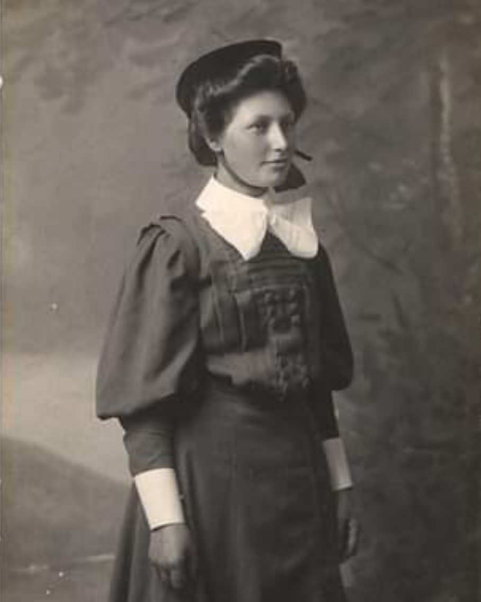
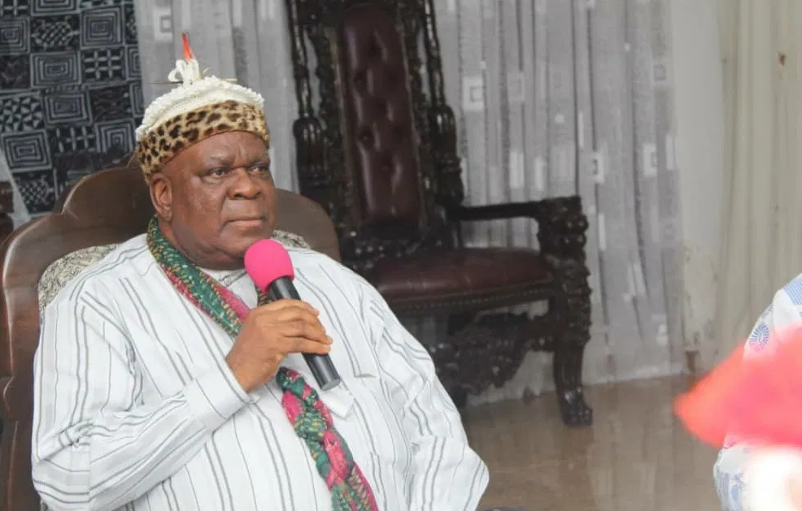

Past & Present Leaders




Abandonment of tripod political appointments, dating back 27 years to the creation of Akwa Ibom State – which buttered the bread of the three major ethnic groups: Ibibio, Anang, and Oron – has left Oron dazed. Oron is shouting from the rooftop for justice, amid suggestion for it to think outside the box, in a miasma of ethnic politics stoked by the Peoples Democratic Party (PDP) adopting a new zoning formula.
Read More...